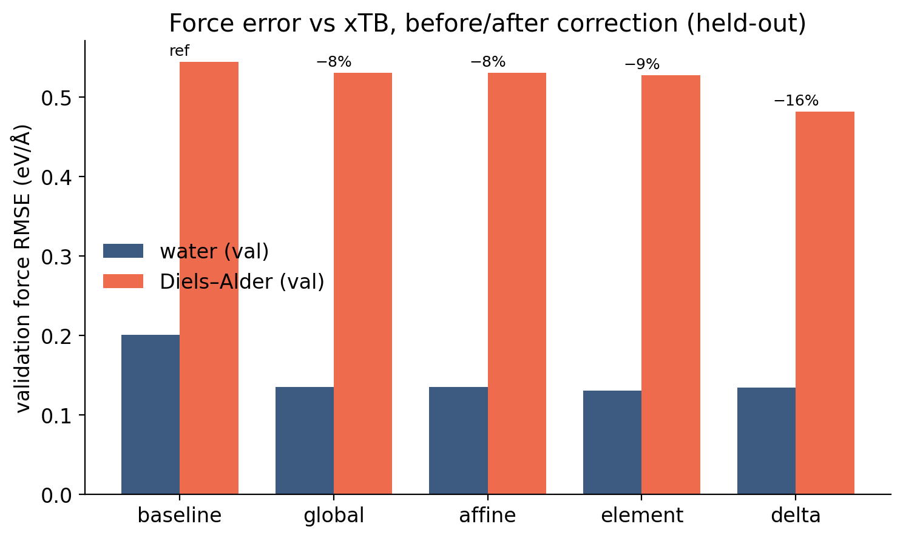
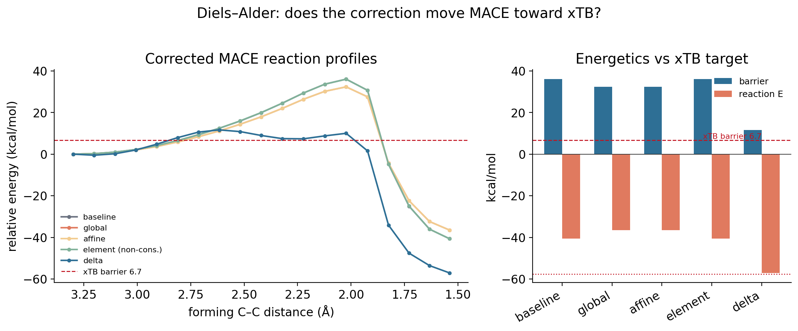
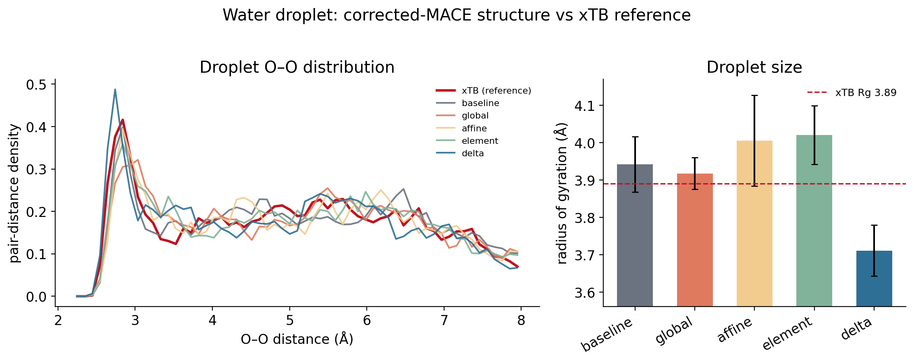
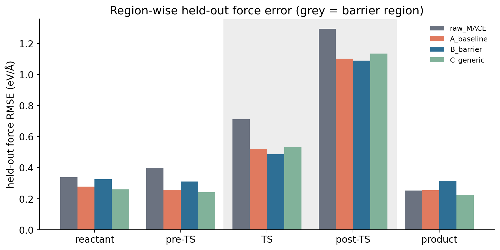
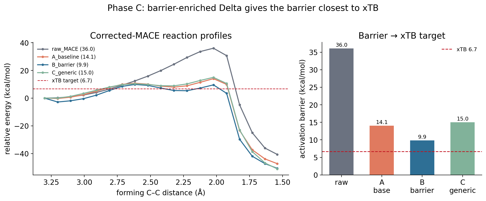
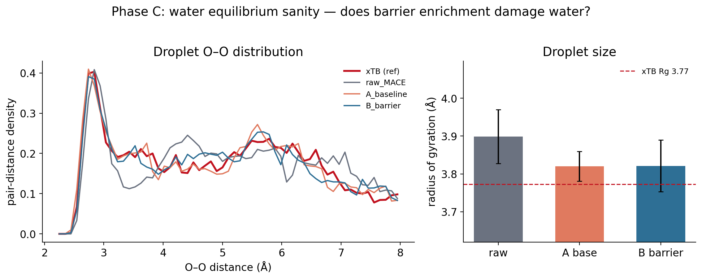
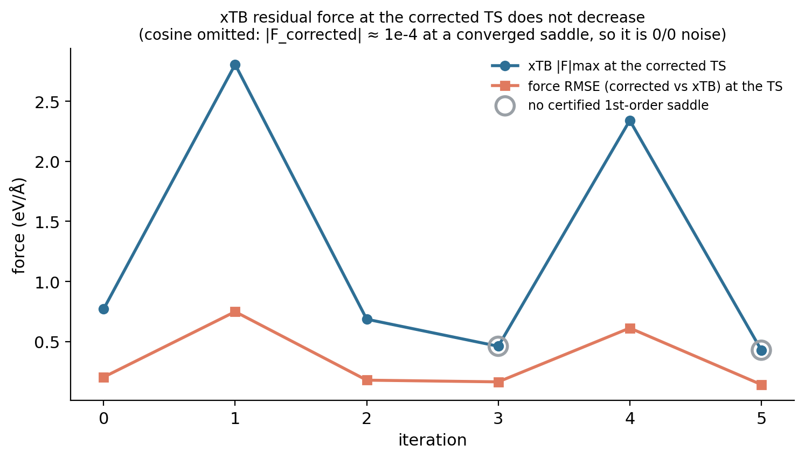

Study 08 — Post-training corrections
How much MACE↔︎xTB error can a lightweight correction remove without retraining — and does iterating it help?
This is the detailed study behind Pillar 3 — Post-training correction and Pillar 4 — Iterative calibration. Those pages carry the argument; this page keeps the full tables, controls, and limitations.
1 · Motivation
The Diels–Alder benchmark (Study 04) showed MACE and xTB agree on force direction but differ in magnitude, localized in the reactive region. A systematic, localized residual is the kind of thing a small model can absorb. The question is whether a lightweight post-training correction — fit on paired MACE/xTB forces, with no foundation-model retraining — can remove it.
Base = MACE-OFF23, target = GFN2-xTB (a cheap stand-in for the eventual DFT reference); all applied through the existing CorrectedCalculator, which leaves the foundation model untouched.
2 · Correction architectures
Four models: global (F′ = αF), affine (+ energy shift), element (per-element force scaling, non-conservative), and a conservative delta (energy = fitted radial pair potentials, forces = −∇, linear least-squares fit).
The delta is a sum of Gaussian radial basis functions per element pair — 48 coefficients across 6 pair channels, 3.6 Å cutoff, ridge 1e−3 — fit on the force residual F_xTB − F_MACE. Because it is an energy expression differentiated analytically, it is conservative and therefore MD- and metadynamics-safe.
3 · Initial benchmark
| model | val force RMSE ↓ | DA barrier (scan max) | DA ΔE | droplet Rg (Å) | conservative |
|---|---|---|---|---|---|
| baseline (MACE) | ref | 36.0 | −40.6 | 3.94 | yes |
| global / affine | 8% | 32.3 | −36.5 | 3.9–4.0 | yes |
| element | 9% | 36.0 (inert) | −40.6 | 4.02 | no |
| delta | 16% | 11.7 | −57.1 | 3.71 | yes |
| xTB (target) | — | 6.7 | −57.6 | 3.89* | — |
* xTB R_g from this benchmark’s own short NVT run of the n = 20 droplet; the Phase C and iterative experiments use a separate xTB run (3.77 Å). The ~0.1 Å spread between runs is run-to-run variability (why).
Forces: corrections fix magnitude, not direction
Force direction is already aligned (cosine 0.985); the delta removes the most magnitude error (16%), scalar corrections ~8–9%.

Diels–Alder: the delta is transformative, the others are not
A modest force improvement yields a large energetics correction — the delta captures the bonding-region residual that integrates into the reaction energetics: reaction energy −40.6 → −57.1 (target −57.6, essentially exact) and barrier 36 → 11.7 (target 6.7). Scalar corrections only apply α; element-scaling is energetically inert.

Water: MACE was already right; corrections don’t help (and can hurt)
Baseline MACE already matches the xTB droplet; no correction improves agreement, and this first delta slightly over-compacts it (Rg 3.71 vs 3.89) — a reactive-data-dominated correction mildly degrading already-good equilibrium behaviour. Section 5 shows how targeted enrichment avoids this.

4 · Barrier-region error localization
If the error concentrates at the barrier (Study 04), the correction’s training data should too. Held-out force errors on a strict no-leakage split by parent path geometry (test parents never contribute to any fit):
| region | raw MACE | baseline Delta | barrier-enriched Delta | generic control |
|---|---|---|---|---|
| overall | 0.556 | 0.432 | 0.456 | 0.427 |
| TS region | 0.712 | 0.519 | 0.487 | 0.532 |
| TS + post-TS | 0.906 | 0.714 | 0.688 | 0.734 |
| cosine, TS region | 0.970 | 0.981 | 0.983 | 0.980 |

The barrier-enriched model has the lowest barrier-region error but is slightly worse overall (0.456 vs 0.432) — the fixed-capacity Delta reallocates toward the barrier at a small cost in the basins where all models already agree.
5 · Targeted vs generic calibration
The controlled experiment: identical architecture and hyperparameters, identical data budget — 32 extra configurations either way — placed either in the barrier region (forming C–C ≈ 1.7–2.4 Å) or sampled generically.
| model | barrier (constrained scan) | reaction energy | TS forming C–C |
|---|---|---|---|
| raw MACE | 36.0 | −40.6 | 2.02 Å |
| baseline Delta | 14.1 | −47.3 | 2.02 Å |
| barrier-enriched Delta | 9.9 | −50.7 | 2.62 Å |
| generic control (equal count) | 15.0 | −51.1 | 2.02 Å |
| xTB (target) | 6.7 | −57.6 | 2.32 Å |

Barrier-region data moved the barrier 14.1 → 9.9; the same number of generic configurations did essentially nothing (14.1 → 15.0). Where the data goes matters more than how much of it there is.
Water is preserved
| O–O peak | droplet Rg | |
|---|---|---|
| raw MACE | 2.84 Å | 3.90 Å |
| baseline Delta | 2.74 Å | 3.82 Å |
| barrier-enriched Delta | 2.74 Å | 3.82 Å |
| xTB (Phase C reference run) | 2.84 Å | 3.77 Å |

Barrier enrichment leaves water identical to the baseline Delta. The pairwise Delta has separate channels per element pair, so added C–C/C–H data touches only the carbon channels and leaves the O–O/O–H channels that govern water untouched — clean selectivity.
6 · Scan versus saddle: a methodological refinement
The 9.9 kcal/mol above is a constrained-scan barrier: the maximum along a path with both forming C–C distances held equal and everything else relaxed. That is a cheap, useful estimator, but the constrained path is not guaranteed to pass through the true saddle.
Running a Sella first-order saddle search on the same barrier-enriched Delta and certifying it with a mass-weighted Hessian gives a different, better-founded number:
| estimator, same corrected model | barrier | forming C–C | certification |
|---|---|---|---|
| constrained scan | 9.9 kcal/mol | 2.617 Å | not a stationary point |
| certified first-order saddle, vs frozen xTB reactant | 6.33 kcal/mol | 2.428 Å | 1 imaginary mode, −358.3 cm⁻¹ |
| same saddle, vs reactant relaxed on the corrected model | 8.23 kcal/mol | 2.428 Å | same |
| xTB reference | 6.7 kcal/mol | 2.315 Å | 1 imaginary mode, −394 cm⁻¹ |
The certified saddle also sits 0.173 Å (RMSD) from the xTB TS, and its reaction-mode overlap with the forming-bond coordinate is 0.381 — a genuine Diels–Alder mode, though less pure than xTB’s own 0.801.
9.9 kcal/mol is the constrained-scan estimator and remains correct for that quantity — it is what the earlier write-ups reported and it has not been withdrawn. 6.33 kcal/mol is the certified saddle on the same model. The scan overestimates by ≈3.5 kcal/mol here because its constrained path misses the saddle by ~0.19 Å in the forming C–C coordinate. Both are tracked separately; neither replaces the other.
7 · Iterative correction experiment
If targeted calibration works once, does repeating it keep working? The loop: find the current corrected saddle → query xTB there → add the data → refit the same Delta → re-search. Run as a controlled experiment with a hand-fixed query rule; no acquisition function or uncertainty estimate was involved.
One iteration. Relaxed scan (giving both a scan barrier and a Sella seed) → Sella saddle search → TS validity gate (converged, exactly one imaginary mode, forming C–C in 1.5–3.0 Å, reaction-mode overlap ≥ 0.30) → xTB query at that geometry → a packet of the saddle plus ±0.05/±0.10 Å along the imaginary mode plus 2 isotropic 0.05 Å perturbations = 7 new xTB calculations → refit on the cumulative dataset.
Held fixed: architecture and every hyperparameter; a 48-configuration held-out reactive split never trained on.
| iter | cum. xTB calls | Sella stationary-point barrier (frozen xTB R; bracketed = uncertified) | scan barrier | forming C–C | certified? | imaginary mode | xTB |F|max at TS | held-out TS+post | water Rg |
|---|---|---|---|---|---|---|---|---|---|
| 0 | 7 | 6.33 | 9.87 | 2.428 Å | yes | −358.3 cm⁻¹ | 0.770 | 0.6879 | 3.738 |
| 1 | 14 | 9.72 | 10.51 | 1.996 Å | yes | −758.1 | 2.805 | 0.6880 | 3.690 |
| 2 | 21 | 7.11 | 12.50 | 2.415 Å | yes | −333.4 | 0.686 | 0.6973 | 3.841 |
| 3 | 28 | (8.62) | 12.75 | 2.519 Å | no (2 modes) | −309.6 | 0.461 | 0.6966 | 3.796 |
| 4 | 35 | 9.46 | 13.54 | 2.046 Å | yes | −461.3 | 2.340 | 0.6987 | 3.803 |
| 5 | 42 | (9.25) | 13.91 | 2.519 Å | no (2 modes) | −312.8 | 0.428 | 0.7113 | 3.834 |
| xTB target | — | 6.7 | 6.7 | 2.315 Å | 1 mode | 0 | — | 3.77 |




Iteration 0 was the best model of the run. Across 5 iterations and 42 additional xTB reference calculations, the certified saddle barrier oscillated away from target (6.33 → 9.46 kcal/mol at the last certified iteration, error 0.37 → 2.76; against the model-relaxed reactant 8.23 → 13.98; earlier versions quoted 0.37 → 2.55, whose endpoint is the uncertified iteration 5) and the scan barrier degraded monotonically (9.87 → 13.91). Held-out TS+post-TS error rose 0.6879 → 0.7113 (+3.4%); overall rose 0.4556 → 0.4704 (+3.3%). Water stayed within MD noise throughout (Rg 3.690–3.841, per-iteration σ 0.037–0.086, no condensation).
The fit is not diverging. Delta coefficient norms across iterations: 6.051, 5.953, 5.988, 5.966, 5.947, 6.111. This is a fixed capacity being reallocated, not an unstable regression.
An earlier version of the loop seeded each saddle search from the xTB TS, the strategy that works for raw MACE. On a corrected surface it fails: Sella converges to a spurious reactant-basin saddle at 3.20 Å whose imaginary mode is orthogonal to bond formation (overlap 1.2e−06, versus ~0.14 for a random direction in 48 DOF) and whose “barrier” is −3.84 kcal/mol — below the reactant. Querying xTB there degraded the model (scan barrier 9.87 → 12.91). That run is retained as a negative control. The fix — seeding from each iteration’s own relaxed-scan maximum, plus the validity gate — follows the project’s standing convention of seeding saddle searches from a relaxed scan.
The cosine between corrected and xTB forces at a converged saddle is meaningless: the corrected force there is ~1e−4 eV/Å by construction, so the cosine is a 0/0 noise ratio (observed values 0.296, 0.003, 0.108, −0.663, 0.011, −0.654, with no physical trend). The interpretable quantity is xTB’s own residual force at the corrected saddle, tabulated above, which oscillates over 0.43–2.81 eV/Å with no systematic decrease.
8 · Limitations and next question
Reference, not truth. xTB is the chosen proof-of-concept target, not ground truth. No higher-level (DFT or experimental) barrier has been established for this reaction in the project, so matching xTB demonstrates reference-matching, not improved physical accuracy.
Energetic before geometric. Even the best corrected saddle sits 0.173 Å from the xTB TS. Energy agreement outran geometry agreement.
Scope. One reaction, one correction family, one acquisition rule, one budget. Nothing here transfers automatically to other systems.
Not demonstrated. No active learning was implemented — no acquisition metric, no uncertainty estimate, no autonomous sampling — so this says nothing about active learning in general. And the pairwise Delta has not been shown incapable of matching the xTB saddle; only that it did not, under this rule and budget.
Next question — is correction-model capacity the bottleneck? Two observations point that way: the Delta is a sum of radial pair potentials with no angular or many-body terms, while a cycloaddition saddle’s position and curvature depend on angular reorganization of the forming ring; and xTB is never near-stationary at the corrected saddle, so force-matching there asks the correction to reproduce a large reference gradient at a point the model believes is stationary. The discriminating experiment holds the acquisition rule fixed and varies expressiveness — angular/three-body terms, a larger cutoff, more radial channels. That behaviour is consistent with a correction-capacity limitation, which is a supported hypothesis, not a demonstrated result.
Phase 2 findings — PHASE2_ITERATIVE_CORRECTION_FINDINGS.md →